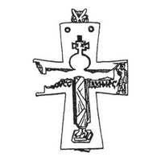
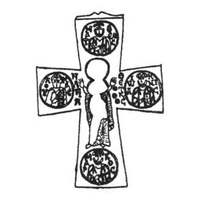

Catalog › CE-0265 · KOR2003-I.2.25
Cruce-encolpion de argint cu Răstignire pe față și Maica Domnului Orantă pe revers, gravare și niello
sec. X (?) (901–1000) · loc necunoscut · Muzeul Național de Istorie al Ucrainei, Kiev, inv. ДРА 643 (17919)
double-sided reliquary cross (enkolpion), argint; c. X (?) (901–1000); find spot unknown; kept at Muzeul Național de Istorie al Ucrainei, Kiev.




Identificare
- Categorie
- Encolpion bivalv (relicvar)
- Material
- Argint
- Tehnică
- Turnare în relief; Ștanțare; Gravare (incizie); Niello
- Stare
- Întreagă
- Dimensiuni
- Î 58 × L 42 × Gr 5 mm
Iconografie
- Avers
- Neidentificat
- Descriere avers
- Valva de față: imaginea gravată cu niello a Răstignirii. Iisus este reprezentat într-un veșmânt lung, aproape stând pe suppedaneum; sus, deasupra capului, o cruce cu capete drepte (tăbliță) cu proeminențe laterale ascuțite ale traversei și cu monograma ICX în centru (monograma lipsește acum). În colțurile de sus ale capătului de sus cercuri gravate. Pe capetele laterale imagini bust gravate cu niello ale unor sfinți. Adânciturile pentru niello sunt făcute prin ștanțare. Sub mâinile lui Hristos, de ambele părți, inscripție gravată (a fost umplută cu niello) ІДЕОVСС ІДVНМНРС (după Evanghelia lui Ioan XIX, 26–27). Niello s-a păstrat pe alocuri.
- Revers
- Maica Domnului Orantă; Evangheliști în medalioane
- Descriere revers
- Valva de revers: în centru imaginea gravată cu niello a Maicii Domnului Orantă. De ambele părți, în centrul crucii, inscripție gravată în coloană НАГІА ΘЕОТОКОС. La capete patru imagini bust gravate cu niello ale evangheliștilor în medalioane; de ambele părți ale fiecărui medalion inscripție gravată în coloană МАТΘЕОС, МАРКОС, ЛОVКАС, ІѠАННІС. Niello s-a păstrat pe alocuri.
- Inscripții
- ІДЕОVСС ІДVНМНРС; НАГІА ΘЕОТОКОС; МАТΘЕОС; МАРКОС; ЛОVКАС; ІѠАННІС
- Limba
- Greacă
Datare și atribuire
- Datare
- sec. X (?) (901–1000)
- Centru
- Necunoscut
- Tipologie
- Korzukhina–Peskova 2003, tip I 2
Descoperire
- Context
- Colecție (fără context)
Păstrare și referințe
- Colecție
- Muzeul Național de Istorie al Ucrainei, Kiev
- Nr. inventar
- ДРА 643 (17919)
- Bibliografie
- G. F. Korzukhina, A. A. Peskova, Древнерусские энколпионы. Нагрудные кресты-реликварии XI–XIII вв., Sankt-Petersburg, 2003 [Korzukhina–Peskova 2003], p. 58, cat. nr. I 2/25, reprodusă la Табл. 9 (planșe, p. 251). Bibliografie citată în sursă: Корзухина, архив ф. 77, д. 15, л. 7. Publicată și în A. A. Пескова, Л. В. Строкова, Христианские древности Византии в «Сирийской коллекции» Б. И. и В. Н. Ханенко, Sankt-Petersburg–Kiev, 2012 [Peskova, Strokova 2012], p. 181, cat. nr. 71, ilustrația (fotografie și desen) la aceeași pagină.
- Figura
- Табл. 9
- Planșe
- Korzukhina–Peskova 2003, Табл. 9 (planșă fără paginație proprie în PDF; p. 251 tipărită)
- Observații
- Datare după Peskova: sec. X (?). Proveniență în colecție: trimis prin poștă în 1915. Latura interioară a valvelor este netedă, dar pe ele se văd reliefurile imaginilor exterioare. Bordurile valvelor sunt lipite separat. Balamalele sunt pierdute, s-a păstrat numai baza cu 5 petale a balamalei de sus a valvei de față. În prezent valva de față este ruptă în două părți, capetele laterale rupte, partea de sus a imaginii centrale și a celor laterale lipsește. Pe valva de revers lipsesc unele margini și partea interioară a imaginii centrale. Coordonate: nu sunt date în sursă.
Citare: Corpus Encolpiorum, CE-0265, Cruce-encolpion de argint cu Răstignire pe față și Maica Domnului Orantă pe revers, gravare și niello, --root/piese/KOR2003-I.2.25/ (accesat 2026-10-17).